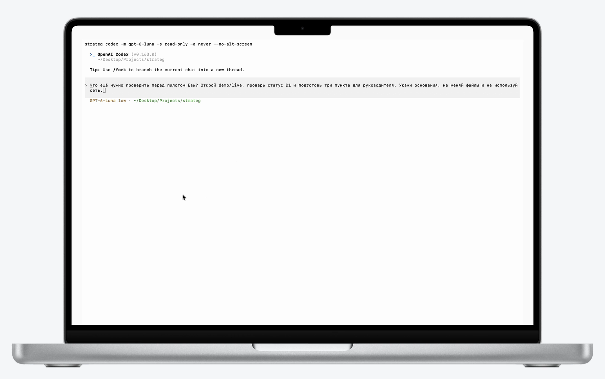

Руководителю продукта нужно выбрать следующий шаг, даже когда материалы неполные. «Стратег» сравнивает варианты, показывает основания и отмечает, каких данных для выбора не хватает. Решение остаётся за руководителем.
Чтобы попробовать, распакуйте архив проекта и откройте папку в агентной IDE или CLI. Попросите агента прочитать AGENTS.md и продолжить demo/live.

В учебном примере руководитель решает, стоит ли проверять, как объяснять пользу Евы людям, которые не могут ответить на звонок во время встречи.
Сначала агент предлагает проверить, понимают ли люди описание функции. Затем учебная поправка снимает это предположение. Агент помечает план пилота для пересмотра и не подменяет прежнее объяснение новой догадкой.
В записи Codex проверяет этот статус и показывает, что ещё надо выяснить. Спрос и затраты остаются неизвестными. Пилот не запускали.

В brief.md записан вопрос. В state.json хранятся источники, утверждения и связи с решениями. В strategy.md остаются варианты и план проверки. Новый сеанс продолжает работу по этим файлам.
Локальные скрипты на Python проверяют структуру и связи. При отзыве основания они помечают зависимые записи для пересмотра. Они не проверяют, прав ли источник и подходит ли рекомендация.
В демо Codex на GPT-6 Luna читает материалы, проверяет статус решения и составляет три пункта для руководителя. Агент не меняет файлы и не принимает решение о пилоте.